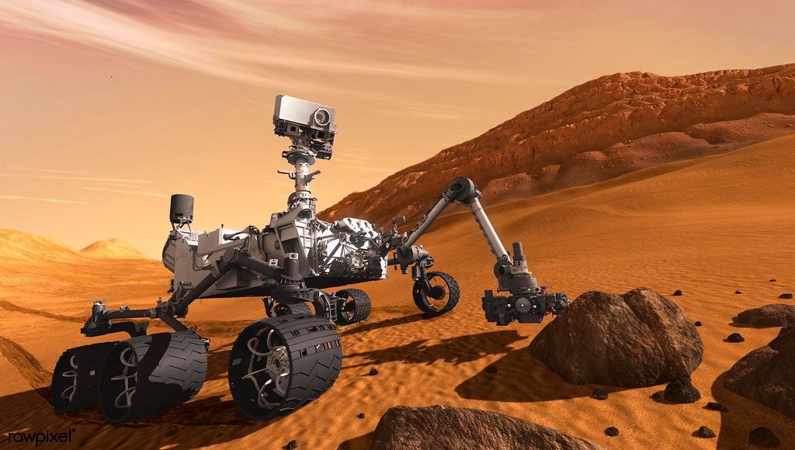

Future Robotics Applications
With current advancements in robotics, the future applications of robotics will be limitless, aiding the world from surgery, farming, and more!
The future of robotics is revolutionizing surgery by enabling precise, minimally invasive procedures
that enhance patient outcomes. Advanced robotic systems offer surgeons improved control and
accuracy, leading to smaller incisions and quicker recovery times. Tele-surgery expands access to
expert care in underserved areas, while ongoing advancements promise to improve surgical efficiency
and safety, ushering in a new era of patient-centered healthcare.
This photo is from https://www.technologyreview.com/
In the future, robotics will revolutionize emergency response by deploying advanced drones and
ground robots that can swiftly deliver medical supplies and assess disaster zones in real-time.
These robots will navigate hazardous environments to locate and assist survivors, enhancing safety
and efficiency for human responders. As technology evolves, the integration of AI and autonomous
systems will enable even faster coordination and response times, ultimately transforming how we
manage crises and save lives during emergencies.
This photo is from https://www.lucas-cpr.com/
Future robotics advancements will allow for autonomous underwater vehicles
that can dive to extreme depths without human intervention. Equipped
with advanced sensors and AI, robots will map the ocean floor, study
hydrothermal vents, and discover new marine species in areas far too
deep for human divers. The future of robotics will pioneer the exploration
of oceans that humans weren't able to.
This photo is from https://newatlas.com/
In the future, robotics will revolutionize space exploration, collecting useful information and data to aid humankind in the development of sustainable life beyond Earth. Robotics will take on a crucial role in giving humans the information we need to start a foundation on space exploration.

Farmers are constantly being put at risk due the dangerous tasks they perform.
The future of robotics are improving the livelihoods of farmers every day. They
cary out dangerous tasks for farmers and reduces the risks of farmers being put
in danger such as in grain bins. The future of robotics will continuously improve
the overall health and decrease the overall danger within agriculture, leading to
a more advanced world.
Image: Courtesy of Grain Weevil / Cecil Smalley
In the future, robotics will revolutionize emergency response by deploying advanced drones and
ground robots that can swiftly deliver medical supplies and assess disaster zones in real-time.
These robots will navigate hazardous environments to locate and assist survivors, enhancing safety
and efficiency for human responders. As technology evolves, the integration of AI and autonomous
systems will enable even faster coordination and response times, ultimately transforming how we
manage crises and save lives during emergencies.
Photo courtesy of Blue River Technology